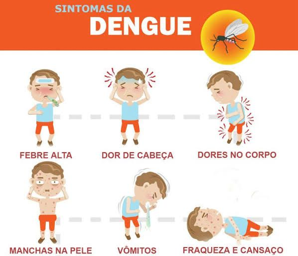
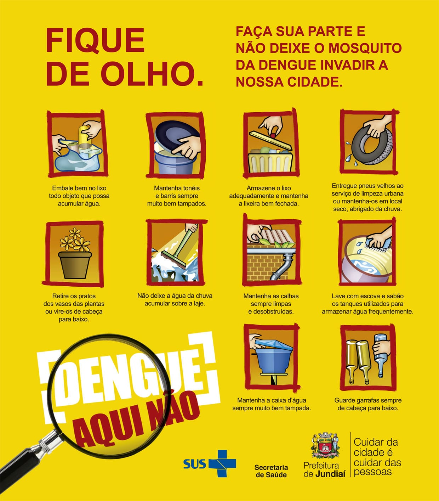

Juntos contra a Dengue
O que é a Dengue?
A dengue é uma doença viral transmitida pela picada do mosquito Aedes aegypti,
comum em regiões tropicais e subtropicais. Ela pode causar febre alta, dores no corpo,
cansaço extremo e, em alguns casos, complicações graves. É uma preocupação
constante de saúde pública, especialmente em épocas chuvosas, quando há mais
criadouros do mosquito.
Dengue Hemorrágica: quando se torna grave
A forma mais grave da doença é conhecida como dengue hemorrágica. Ela pode causar
sangramentos, queda de pressão e até levar à morte se não for tratada rapidamente. Os
sinais de alerta incluem dor abdominal intensa, vômitos persistentes, sangramentos no
nariz ou gengiva e tontura. Nesses casos, é fundamental procurar atendimento médico
urgente.
Sintomas da Dengue
Dengue Clássica
A forma mais comum da doença costuma surgir de forma repentina, com sintomas que
podem durar de 5 a 7 dias. Os principais sinais são:
• Febre alta;
• Dor de cabeça intensa;
• Dores musculares e nas articulações;
• Dor atrás dos olhos;
• Manchas avermelhadas na pele;
• Cansaço excessivo;
• Náuseas e vômitos;
• Falta de apetite.
Importante: Mesmo que os sintomas pareçam leves, é necessário procurar uma
unidade de saúde para o diagnóstico correto.

Dengue Hemorrágica (Grave)
Essa forma é mais perigosa e pode evoluir rapidamente. Os sinais de alerta aparecem
geralmente entre o 3º e 5º dia de infecção, quando a febre começa a ceder. Fique atento
a:
• Dor abdominal forte e contínua;
• Vômitos persistentes;
• Sangramentos no nariz, gengiva ou nas fezes;
• Tontura ou sensação de desmaio;
• Dificuldade de respirar;
• Cansaço e/ou irritabilidade.
Atenção: Todas as faixas etárias são igualmente suscetíveis à doença, porém indivíduos
com condições preexistentes com as mulheres grávidas, lactentes, crianças (até 2 anos) e
pessoas > 65 anos têm maiores riscos de desenvolver complicações pela doença.
Se algum desses sinais aparecer, procure atendimento médico imediatamente. O
tempo é essencial!
Transmissão da Dengue
A dengue é transmitida principalmente pela picada da fêmea do mosquito Aedes
aegypti, que se infecta ao se alimentar do sangue de uma pessoa que já está com o vírus
no organismo. Esse mosquito atua como vetor, ou seja, um transmissor da doença entre
pessoas.
A dengue não é transmitida por contato direto com o doente, por meio de água,
alimentos ou objetos.
Como ocorre a transmissão vetorial:
• 1. Contato com pessoa infectada:
A fêmea do Aedes aegypti pica uma pessoa contaminada com o vírus da dengue.
• 2. Multiplicação do vírus no mosquito:
O vírus se desenvolve dentro do mosquito, tornando-o capaz de transmitir a
doença.
• 3. Picada em pessoas saudáveis:
Quando o mosquito infectado pica outras pessoas, ele passa o vírus, iniciando o
ciclo da doença nelas.
Outras formas de transmissão:
• Transmissão vertical (de mãe para filho):
Em casos raros, o vírus pode ser transmitido durante a gestação ou no parto.
• Transfusão de sangue:
Embora incomum, há risco de transmissão se o sangue doado estiver
contaminado e não for detectado.

Prevenção
A melhor maneira de combater a dengue é eliminar os criadouros do mosquito.
Algumas atitudes simples fazem a diferença:
• Tampar caixas d'água e tonéis;
• Esvaziar e lavar vasos de plantas com frequência;
• Guardar pneus em locais cobertos;
• Não acumular lixo em locais abertos;
• Manter garrafas viradas com a boca para baixo.
Além disso, o uso de repelentes e telas de proteção pode ajudar a evitar a picada do
mosquito.
Tratamento: o que fazer se estiver com sintomas
Não existe um remédio específico para eliminar o vírus da dengue. O tratamento é feito
com repouso, hidratação e controle da febre e dores com medicamentos indicados por
um profissional de saúde. É importante não se automedicar, pois alguns medicamentos
podem aumentar o risco de sangramentos. Se apresentar sintomas, procure uma UBS
próxima.
Importância da informação e do cuidado coletivo
A dengue não é apenas um problema individual, mas coletivo. Quando todos cuidam de
seus quintais e denunciam focos do mosquito, toda a comunidade fica mais protegida.
Espalhar conhecimento e manter a vigilância são formas eficazes de salvar vidas.
Referências